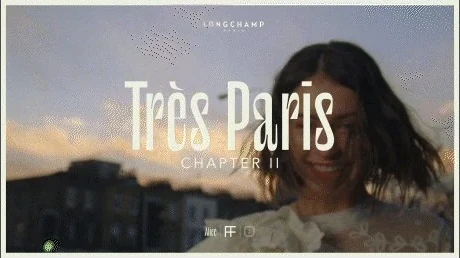

Skip to content
BARTHÉLÉMY VIELLE
CLVSTR
Work
Studies
Information
← All projects
01 image
Selected work / CLVSTR
Longchamp
Motion for “Très Paris – Chapter II”.
Discipline
Treatments
View original colour ↗︎
Explore project ↓

01 / 01
Longchamp
← Previous project
Golfinho
Next project ↗︎
Destrier
Close ✕